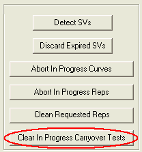
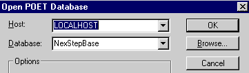
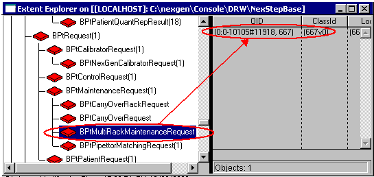
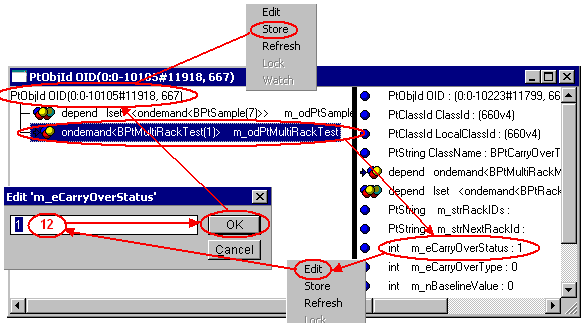

Database - Clearing In-Progress Carryover Test / UCTA Carryover Test
This procedure describes how to clear an in-progress carryover test.
Clear an in-progress carryover test or UCTA carryover test when the
Carryover Test Already In Progress message appears when requesting a carryover test or UCTA carryover test.
Wait for any in-progress samples to complete.
Open the Database Utilities function.
For Windows XP console PC with DxI Software 5.2 and below:
On the console PC, select
Start > Programs > NexGen or NexStep > DbTest.
In the
DbTest
window, select
Database.
Figure 409: DxI DbTest
If the
Database icon is not active, then use these steps to enable the
DevDbTest option in the registry:
Exit
DbTest.
Select
Start
> Run, and then type in
Regedit.
Navigate to
HKEY_LOCAL_MACHINE\SOFTWARE\BECKMAN\NexStep.
Right-click on
DevDbTest, select
Edit, and then change the number 0 to 1.
Open the
DbTest application.
Select
OK to the
Open Poet Database pop-up.
For Windows 8 Min PC with DxI Software 5.3.1 and above:
Note: DxI Software 5.3.1 is compatible with Windows XP console PC. If the software was installed on the Windows XP console PC, then follow the Windows XP section to launch DbTest application and enable the Database tools.
Press
Windows key, select DbTest UD icon or type
DbTest
and open the program.
In the
DbTest
window, select
Database.
Figure 410: DxI DbTest
If the
Database icon is not active, then use these steps to enable the
DevDbTest option in the registry:
Exit
DbTest.
Press
Windows
key, type
regedit, and open the Regedit program.
Navigate to
HKEY_LOCAL_MACHINE\SOFTWARE\BECKMAN\NexStep.
Right-click on
DevDbTest, select
Edit, and then change the number 0 to
1.
Open the
DbTest UD program.
Select
OK to the
Open Poet Database pop-up.
Select
Clear In Progress Carryover Tests. Also, select the
Discard,
Abort, and
Clean buttons, if desired.

If the in-progress carryover tests remain after using DbTest, then use Poet or Fast database application to clear the in-progress carryover tests.
For Windows XP console PC with DxI Software 5.2 and below or Access2 Software 3.4.2 and below:
From the
Windows Desktop on the console PC, select
Start > Programs > NexGen (or Access2) > Poet Developer or Poet Administrator.
In Poet browser, select
File > Open Database.
In the Host field, enter
LOCALHOST. In the Database field, enter
NexStepBase. Select
OK.

Note: NexStepBase is case-sensitive.
Select
Objects > Browse Extent.
For Windows 8 Mini PC with DxI Software 5.3.1 and above or Access2 Software 3.4.3 and above:
Note: DxI Software 5.3.1 and Access2 Software 3.4.3 are compatible with Windows XP console PC. If either software was installed on the Windows XP console PC, then follow the Windows XP section to launch Fast database application. Poet database application is replaced by Fast database application.
Press
Windows key, select
Fast Developer or
Fast Administrator icon or type
developer or
administrator and open the program.
In Fast browser, select
File > Open Database.
In the Host field, enter
LOCALHOST. In the Database field, enter
NexStepBase. Select
OK.
Note: NexStepBase is case-sensitive.
Select
Objects > Browse Extent.
Use Poet or Fast database application to clear in-progress carryover tests.
In the
Extent Explorer window of the
POET or
Fast database, scroll down and select
BPtMultiRackMaintenanceRequest.

Note: Each line in the right side of the window represents a test request. Each test request must be opened and edited individually.
On the right side of the window double click on the last or bottom carryover request in the OID column. A split window opens.
Edit the carryover requests to set the status from in progress to completed.
Left click on the m_odPtMultiRackTest line at the bottom of the left side of the split window.
Note: For each additional line in the query, open and edit the Multi Rack Maintenance Requests.

On the right side of the split window, select the m_eCarryOverStatus entry, and then right-click and select
Edit.
Change the entry from a
1 to a
12, and then select
OK.
Select the PtObjId OID line at the top of the left side of the window, and then right-click and select
Store to save the changes.
When all the lines or tests have been edited, close the PtObjID windows to return to the
Extent Explorer window.
Select
File > Exit > Yes to exit the POET or Fast application.
When in-progress carryover tests are cleared, perform a Database Consistency Check.
For Windows XP console PC with DxI Software 5.2. and below:
Select
Start > Programs > NexGen > NexGenUI UD to launch the user interface.
For Windows 8 Mini PC with DxI Software 5.3.1 and above:
Double click on the
NexGen Application shortcut on desktop, or press
Windows key and select
NexGenUI UD icon, or type
nexgenui and open the program.
In the user interface, select
Sample Manager > New Request
> Maintenance > DxI Carryover or UCTA Carryover > OK, and then verify that the
Carryover Test Already In Progress message has been cleared.


 Note: NexStepBase is case-sensitive.
Note: NexStepBase is case-sensitive.